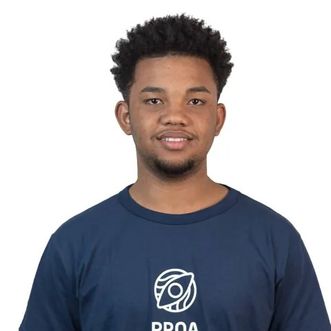

Prazer em conhecer
Sou um profissional em formação na área de desenvolvimento de aplicações mobile. Desde criança, sou apaixonado por tecnologia, e hoje essa paixão se tornou meu objetivo de carreira. Tenho interesse por várias áreas que se conectam ao desenvolvimento, como banco de dados, design, serviços em nuvem (cloud) e desenvolvimento de sistemas. Procuro me desenvolver constantemente, aprendendo, evoluindo e me desafiando.
Sou dedicado, gosto de trabalhar em equipe, trocar experiências e encarar desafios como oportunidades de crescimento — tanto nas habilidades técnicas quanto nas comportamentais.
Baixar o meu CVPlanos para o Futuro
Estágio em desenvolvimento Mobile
Iniciar um estágio na área de tecnologia para adquirir experiência prática, desenvolver habilidades técnicas (hard skills) e interpessoais (soft skills), e me preparar para os próximos desafios da carreira. Juntamente a minha faculdade de engenharia de Software
Habilidades Interpessoais
- Comunicação
- Trabalho em equipe
- Resiliência
- Organização
- Foco em Aprendizado
Conhecimentos técnicos em desenvolvimento mobile:
- Kotlin
- Figma
- Git e GitHub
- Consumo de APIs
- MongoDb
Desenvolvedor Mobile / Júnior
Evoluir de estagiário para desenvolvedor mobile júnior, aplicando meus conhecimentos e experiências adquiridos em projetos reais, contribuindo de forma prática e progressiva dentro das possibilidades e do ambiente de trabalho.
Habilidades Interpessoais:
- Escuta Ativa.
- Comunicação clara.
- Trabalho em equipe.
- Comprometimento.
- Responsabilidade.
- Aprendizado.
Conhecimentos técnicos em desenvolvimento mobile:
- Kotlin
- Git
- GitHub
- Figma
- Cloud
- Kotlin Multiplataform
- Consumo de APIs
Desenvolvedor Mobile / Pleno
Quero evoluir de desenvolvedor mobile júnior para pleno, ganhando mais autonomia e confiança para encarar desafios maiores. Quero aplicar na prática tudo o que venho aprendendo, contribuir com ideias, resolver problemas de forma mais eficiente e crescer junto com o time, sempre respeitando o ritmo e a realidade do ambiente de trabalho.
Habilidades Interpessoais:
- Proatividade
- Escuta ativa
- Visão Análitica
- Gestão de Tempo
- Adaptação a Mudanças
- Pensamento crítico e resolução de problemas
Conhecimentos técnicos em desenvolvimento mobile:
- Firebase
- Debug
- Flutter
- Responsividade
- Compose
Engenheiro de Software:
Quero evoluir além da atuação técnica como um desenvolvedor e engenheiro de Software. Meu objetivo é contribuir com decisões arquiteturais, construir sistemas escaláveis e robustos, atuar com autonomia e responsabilidade, e colaborar com soluções que impactam diretamente o produto e os usuários. Também quero ajudar o time a crescer, compartilhando conhecimento, apoiando colegas com menos experiência e participando da construção de boas práticas e processos mais eficientes.
Habilidades Interpessoais:
- Visão Análitica
- Adaptabilidade
- Liderança
- Resolução de Problemas
- Proatividade
Conhecimentos técnicos Engenheiro de Software:
- Algoritmos
- Estruturas (de dados)
- Cloud
- DevOps
Soft e Hard Skills
Afinidade com as seguintes tecnologias e técnicas:
Frontend
-
Figma
-
Canva
-
Power Point
-
AndroidStudio
-
Kotlin
-
JetPack Compose
Backend
-
MongoDb
-
APIs
-
Git GitHub
-
Banco de Dados
Quero Aprender
- FireBase
- FrameWorks
- PostMan
- CI/CD
- Node.js
- AWS
- Google Cloud
- Render
- MySQL
-
Idiomas
- Português (Nativo)
- Inglês (Básico)